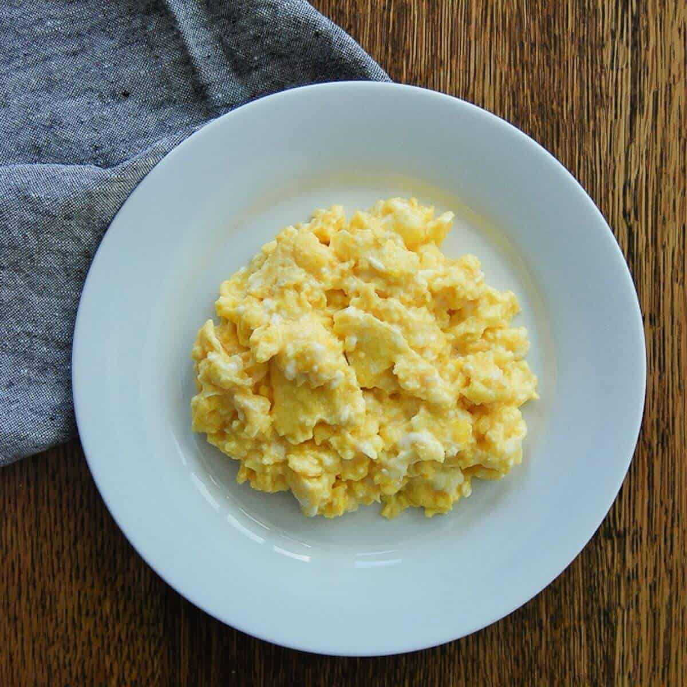
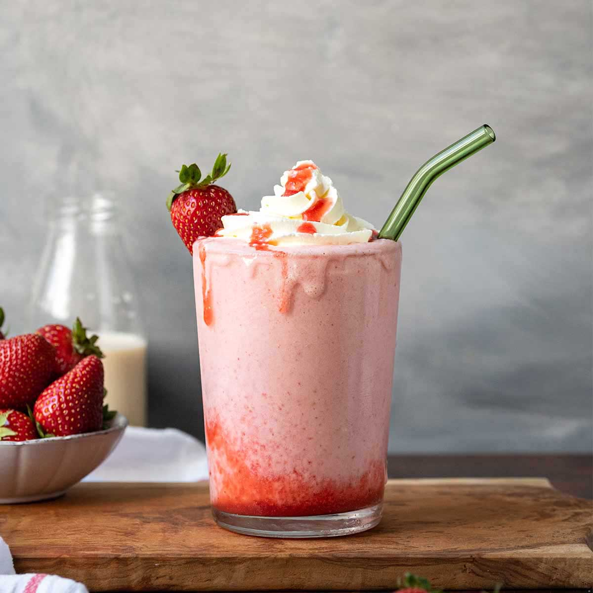

Homepage
About
Contact
Welcome to our Recipe Page
List of Recipes:
Fluffy Scrambled Eggs Recipe

Ingredients:
eggs
milk
flour
salt
pepper
Instructions:
Preheat oven to 375°F (190°C).
Cream eggs and milk until frothy.
In a large bowl, combine flour, salt, and pepper.
Add egg mixture and beat until smooth.
Pour batter into prepared baking dishes.
Bake for 20-25 minutes, or until golden brown on top.
Sandwich Recipe
Ingredients:
bread
butter
deli meat
lettuce
cheese
tomato
Instructions:
Spread butter or mayonnaise on one side of each slice of bread.
Toast the bread in a pan or toaster until golden brown.
Place lettuce on one slice of bread, followed by deli meat, cheese, and tomato.
Add salt & pepper, then spread mustard or extra mayonnaise.
Put the second slice of bread on top, pressing gently.
Slice diagonally and enjoy with chips or a salad!
Milkshake Recipe

Ingredients:
milk
sugar
whipping cream
strawberries
Instructions:
Pour 1 litre of milk in a pan.
Add sugar(to taste) in the milk.
Stir the mixture and let it sit in the freezer overnight.
Using a blender, refine 2 cups of whipping cream until a silky paste is made.
Add the condensed milk to the whipping cream and blend till smooth.
Add strawberries and enjoy.